| (2.5) |
Having the noise wave correlation matrix, one can easily compute the noise parameters [5]. The following equations calculate them with regard to port 1 (input) and port 2 (output). (If one uses an n-port and want to calculate the noise parameters regarding to other ports, one has to replace the index numbers of S- and c-parameters accordingly. I.e. replace "1" with the number of the input port and "2" with the number of the output port.)
Noise figure:
| (2.5) |
Optimal source reflection coefficient (normalized according to the input port impedance):
| 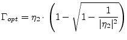 | (2.6) |
| 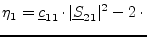 Re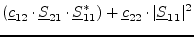 | (2.7) |
| 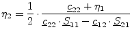 | (2.8) |
Minimum noise figure:
| 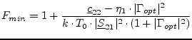 | (2.9) |
| 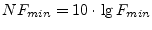 | (2.10) |
Equivalent noise resistance:
| With | 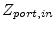 internal impedance of input port |
| Boltzmann constant 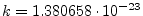 J/K | |
| standard temperature 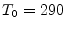K |
Calculating the noise wave correlation coefficients from the noise parameters is straightforward as well.
| 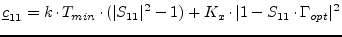 | (2.12) |
| 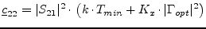 | (2.13) |
 |
(2.14) |
| 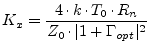 | (2.15) |
Once having the noise parameters, one can calculate the noise figure for
every source admittance
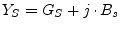, source impedance
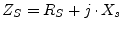, or source reflection coefficient  .
.
| 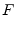 | 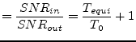 | (2.16) |
| 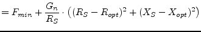 | (2.17) | |
 |
(2.18) | |
 |
(2.19) | |
| 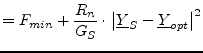 | (2.20) | |
| 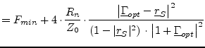 | (2.21) |
Where 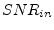 and 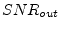 are the signal to noise ratios at the input and output, respectively, 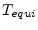 is the equivalent (input) noise temperature. Note that 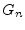 does not equal 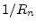.
All curves with constant noise figures are circles (in all planes, i.e. impedance, admittance and reflection coefficient). A circle in the reflection coefficient plane has the following parameters.
center point:
| 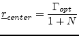 | (2.22) |
| 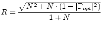 | (2.23) |
| 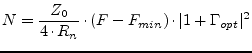 | (2.24) |